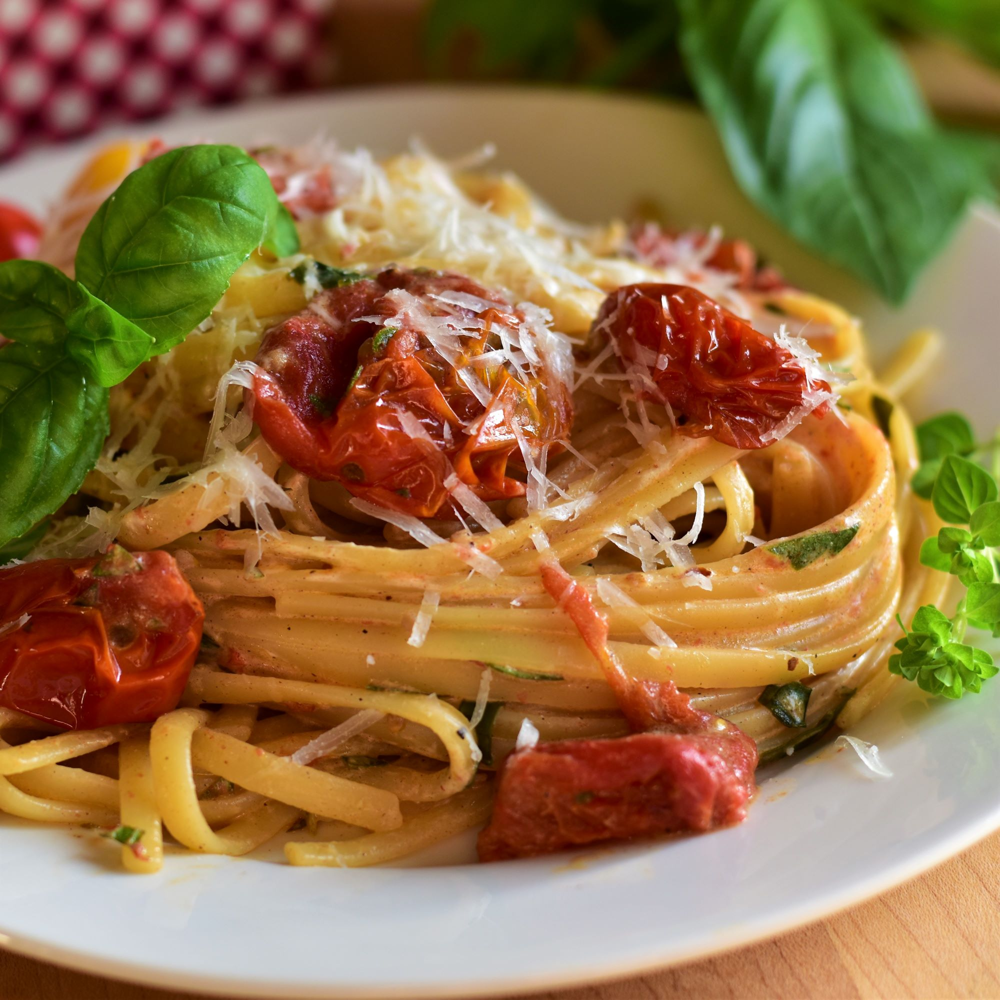

Roasted Tomato Cherry Pasta

An irrestible combination of sweetness and fresh herbs.
Ingredients
- 2 pounds cherry tomatoes, halved
- ½ pound tomatoes, roughly chopped
- 3 cloves garlic, thinly sliced
- 3 tablespoons vegetable stock
- 1 tablespoon olive oil
- 1 tablespoon balsamic vinegar
- 1 teaspoon red pepper flakes
- ¾ teaspoon salt
- ½ teaspoon freshly black pepper
- ¼ cup julienned fresh basil leaves
- 2 tablespoons chopped flat-leaf parsley
- 1 tablespoon chopped fresh oregano
Steps
- Preheat the oven to 350 degrees F (175 degrees C).
- Combine all tomatoes, garlic, chicken broth, olive oil, balsamic vinegar, red pepper flakes, salt,
and pepper in a large, glass baking dish; toss to coat.
- Roast in the middle of the preheated oven, stirring regularly, until tomatoes are tender, about 45
minutes. Remove from the oven and stir in basil, parsley, and oregano.
- When the tomatoes have been roasting for about 35 minutes, bring a large pot of lightly salted water
to a boil. Cook linguine at a boil until tender yet firm to the bite, 5 to 7 minutes (cook for 2
minutes less than package directions.) Drain and return to the pot.
- Add the roasted tomatoes and herbs to the linguine and cook over medium-low heat for 2 minutes. Add
ricotta cheese and stir until melted and smooth.
- Serve topped with Pecorino Romano cheese.